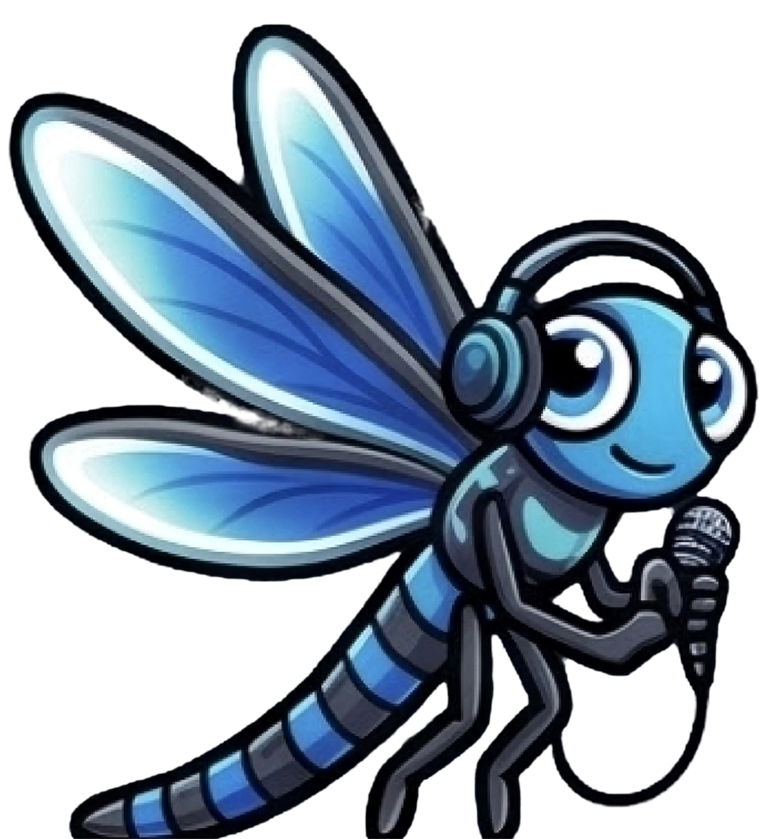
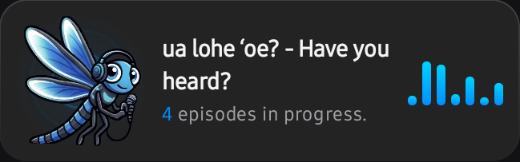
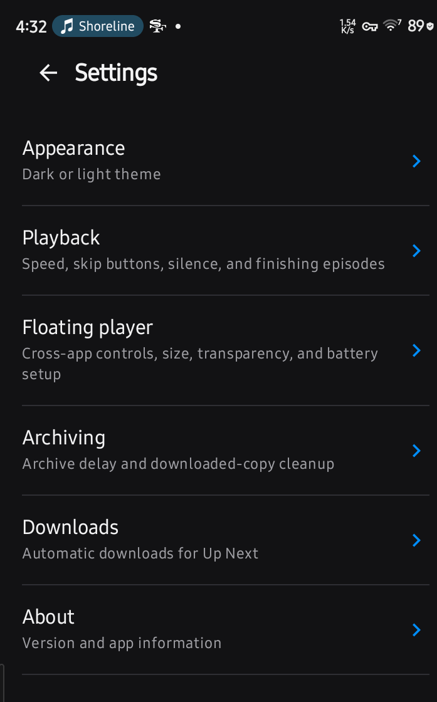

Discover shows
Find podcasts and build a library that feels like yours.
ua lohe ʻoe? - Have you heard?
Find the stories, conversations, news, and curious detours you want to hear. Lohe keeps your listening in order and remembers where you left off.
Android · 0.10.1 · build 2026.25.10.17 · Signed release APK

Meet Kani. Lohe keeps your shows close, your listening progress remembered, and your next episode within reach.
To hear. To listen. To take something to heart. In Hawaiian, that is Lohe (lōhe).

Arrange episodes in Up Next and move them as your mood changes. Choose whether a show's new episodes join at the start or end of the queue.
Queue episodes from your library, discovery, and playlists, then choose the order you want to hear them.
Set skip-back and skip-forward intervals, playback speed, volume boost, voice enhancement, silence controls, and a sleep timer.
Enable optional floating playback controls for quick access over other apps. Background playback and Android media controls stay ready as you move around.

Create playlists for the things you want to hear, and use smart playlists to find episodes by listening state.
Finished episodes are marked played and leave Up Next and explicit playlists; the Played smart playlist keeps them.
Keep custom playlists, downloads, and listening history together in one library.
Download episodes before you go. Completed episodes leave their downloaded copy in place for your chosen archive delay, 24 hours by default, then Lohe cleans it up while keeping your played history.
Bring subscriptions with you using OPML import and export.
Downloaded episodes are available from your library when you need them.
Android Auto uses Lohe's media library to browse and play your podcasts through the car display and controls.
Android Automotive OS is a separate integration and still needs verification on a head unit.
Your Android media session carries playback into supported car interfaces.
Simple defaults, with room to set up Lohe the way that works for you.
Find podcasts and build a library that feels like yours.
Reorder Up Next and set each show to queue new episodes at the beginning or end.
Adjust speed, boost, voice, skips, silence, and the sleep timer.
Organize episodes yourself or let Lohe group them by listening state.
Save episodes for offline listening and manage their archive timing.
Browse the media library and control podcast playback in the car.
Download the signed Android release from GitHub, then import your shows or find something new.